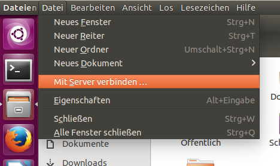
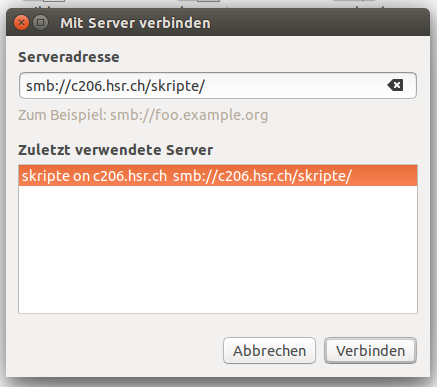
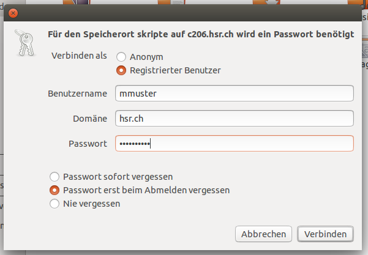
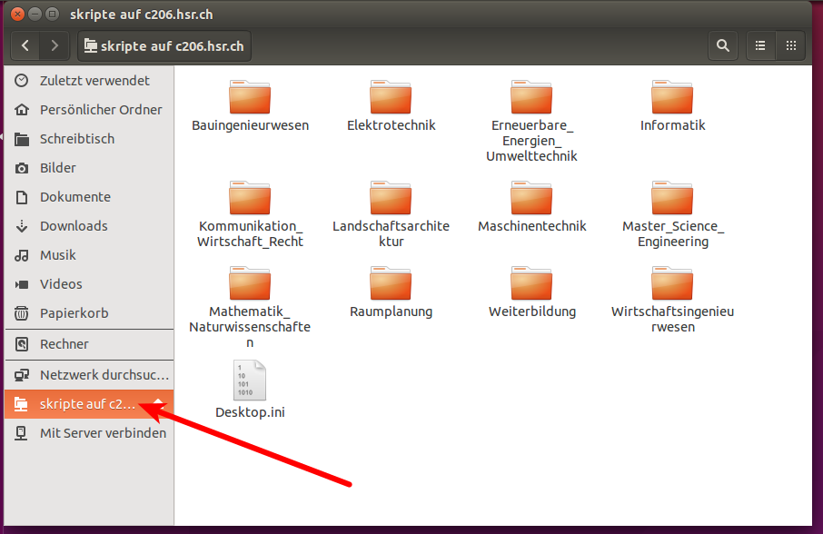
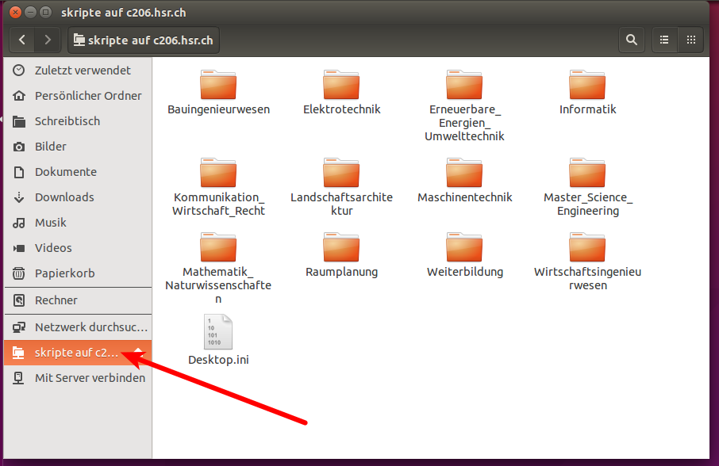

Technische Angaben
| Einstellung | Wert |
|---|---|
| Benutzername | mmuster |
| Benutzerpasswort | GeHeim007 |
| Domäne | hsr.ch |
Pfade zu den HSR Netzwerkfreigaben
| Name | Pfad |
|---|---|
| Skripte | smb://c206.hsr.ch/skripte |
| Scratch | smb://c206.hsr.ch/scratch |
| Persönliche Ablage | smb://c101.hsr.ch/mmuster |
Netzwerkfreigaben unter Ubuntu einrichten
Bevor du loslegst: Du kannst nur im internen Netz der HSR auf die Netzwerkfreigaben zugreifen. Wenn du also nicht mit dem HSR-Secure-WLAN verbunden bist, musst du dich via VPN verbinden.
- Öffne den Dateimanager
- Verbinde zum Server über das Menu
Datei+Mit Server verbinden...
 - Gib den Pfad zur Netzwerkfreigabe an. Hier als Beispiel zum Skripteserver

Bestätige mitVerbinden - Im folgenden Dialog musst du deine Benutzerdaten angeben

Bestätige mit
Verbinden - Du bist nun Verbunden!
 

- Die Netzwerkfreigabe erscheint in der Seitenleiste. Klicke rechts auf das Symbol und wähle
Lesezeichen hinzufügen. Damit kannst du das nächste Mal direkt auf die Netzwerkfreigabe zugreifen!
{kind=link}
{kind=link}
{kind=link}
{kind=link}
Netzwerkfreigaben unter Ubuntu per mount-Befehl
Diese Anleitung hilft dir, falls es dir nicht gelingt, mit der obigen Variante die HSR-Ablagen einzubinden. Sie ist für diejenigen gedacht, die bereits etwas mit Ubuntu vertraut sind. Wir verwenden dazu die Unix-Eigenschaft, dass sich Verzeichnisse per mount-Befehl einbinden lassen. Du kannst danach auf die HSR-Netzwerkfreigaben zugreifen, als wären sie ein gewöhnlicher Ordner in deinem Dateimanager.
Öffne den Dateimanager und wechsle ins Verzeichnis
/mnt. Erstelle dort einen Ordner mit dem Namenhsr.-
Wechsle ins Verzeichnis
hsrund erstelle dort vier weitere Ordner. Du kannst ihnen irgendeinen Namen geben oder sie folgendermassen benennen:-
ebooks- Ältere und neuere Ebooks -
myshare- Deine private Dateiablage. Falls du an einem Kopierer der HSR etwas einscannst, landet es hier. Beachte: Der Speicherplatz ist beschränkt. -
scratch- Die temporäre Ablage für alle Studiengänge -
skripte- Skripte aller Studiengänge
-
-
Optional: Du kannst jeweils von Hand die Verzeichnisse mounten, müsstest aber alle Einzelheiten von Hand eintragen. Deswegen vereinfachen wir den Vorgang. Öffne einen Texteditor. Trage folgende Zeilen ein:
username=mmuster password=GeHeim007Speichere die Datei in deinem Home-Verzeichnis unter dem Namen
.fstab.credentials.hsr. Vergiss den Punkt zu Beginn der Datei nicht!Wichtig: Wenn du deine Festplatte oder dein Home-Verzeichnis nicht verschlüsselt hast, kann unter Umständen dein Passwort und dein Username leicht ausgelesen werden.
-
Setze die Zugriffsrechte für die Datei, damit niemand ausser dir darauf zugreifen kann. Öffne ein Terminalfenster und tippe:
chmod 600 .fstab.credentials.hsr sudo chown maria.root .fstab.credentials.hsrSetze anstelle
mariadeinen Namen, mit dem du dich in Ubuntu einloggst. -
Nun musst du noch dem Betriebssystem sagen, wo es diese Information findet und wie es die Ordner einbinden soll, die wir oben erstellt haben. Tippe im Terminal:
sudo gedit /etc/fstab -
Schreibe zuunterst folgende Zeilen in die fstab-Datei oder kopiere sie gleich:
//c206.hsr.ch/skripte /mnt/HSR/skripte cifs credentials=/home/maria/.fstab.credentials.hsr,noauto,users,iocharset=utf8,soft,ro 0 0 //c206.hsr.ch/scratch /mnt/hsr/scratch cifs credentials=/home/maria/.fstab.credentials.hsr,noauto,users,iocharset=utf8,soft 0 0 //c101.hsr.ch/mmuster /mnt/hsr/myshare cifs credentials=/home/maria/.fstab.credentials.hsr,noauto,users,iocharset=utf8,soft 0 0 //c206.hsr.ch/ebooks /mnt/hsr/ebooks cifs credentials=/home/maria/.fstab.credentials.hsr,noauto,users,iocharset=utf8,soft,ro 0 0Schreibe anstelle
mariadeinen Login-Namen, mit dem du dich in Ubuntu einloggst. Ersetzemmustermit dem Login-Namen, den du für die HSR verwendest. -
Nun kannst du mit folgenden Befehlen die Netzwerkfreigaben einbinden:
mount /mnt/hsr/skripte/ mount /mnt/hsr/scratch/ mount /mnt/hsr/myshare/ mount /mnt/hsr/ebooks/Nun kannst du im Dateimanager beispielsweise im Ordner
/mnt/hsr/skriptealle Skripte von der Netzwerkablage sehen, als wären sie auf deinem Computer. -
Mit folgenden Befehlen trennst du die Verbindung wieder:
umount /mnt/hsr/skripte/ umount /mnt/hsr/scratch/ umount /mnt/hsr/myshare/ umount /mnt/hsr/ebooks/